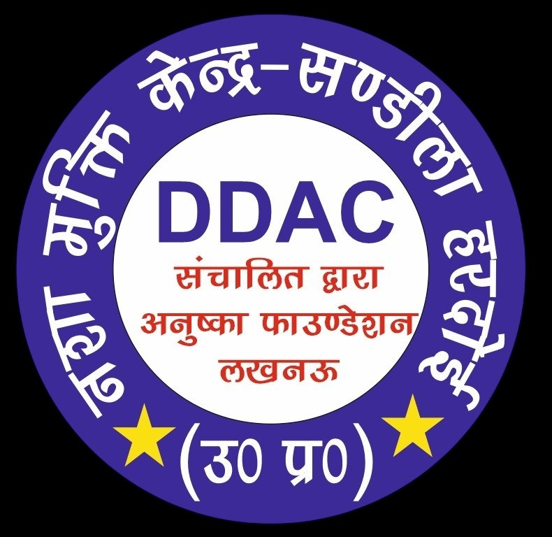
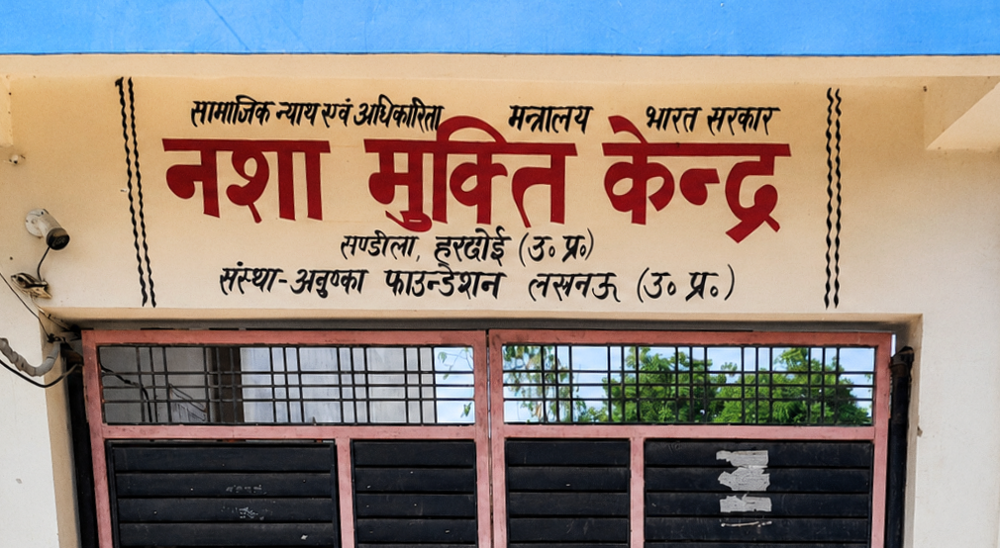

Home › About Us
Anushka Foundation is a rehabilitation and recovery centre committed to helping individuals overcome addiction and
rebuild life with dignity, confidence and emotional balance.
अनुष्का फाउंडेशन एक पुनर्वास और पुनर्प्राप्ति केंद्र है जो व्यक्तियों को नशे की लत से उबरने और गरिमा, आत्मविश्वास और भावनात्मक संतुलन के साथ जीवन
का पुनर्निर्माण करने में मदद करने के लिए प्रतिबद्ध है।
To provide effective de-addiction treatment, counselling, rehabilitation services and awareness support so individuals can return to a healthy and meaningful life.
प्रभावी नशामुक्ति उपचार, परामर्श, पुनर्वास सेवाएं और जागरूकता सहायता प्रदान करना ताकि व्यक्ति स्वस्थ और सार्थक जीवन में लौट सकें।To build an addiction-free society where people receive timely help, families get guidance and every recovered person lives with self-respect.
एक ऐसे व्यसन-मुक्त समाज का निर्माण करना जहां लोगों को समय पर सहायता मिले, परिवारों को मार्गदर्शन मिले और प्रत्येक ठीक हुआ व्यक्ति आत्मसम्मान के साथ जीवन व्यतीत करे।Recovery works best with professional care, counselling, discipline, emotional support, trust, positivity, healthy routines,
safety, respect and guidance.
स्वास्थ्य लाभ देखभाल, परामर्श, अनुशासन, भावनात्मक सहयोग, विश्वास, सकारात्मक वातावरण, सुरक्षा, सम्मान और उचित मार्गदर्शन से बेहतर होता है।

We create an environment where patients feel heard, supported and motivated.
Counselling focuses on triggers, habits, emotional pain and decision-making.
Every case is handled with confidentiality, dignity and careful communication.
Recovery plans focus on stability, confidence, routine and future planning.